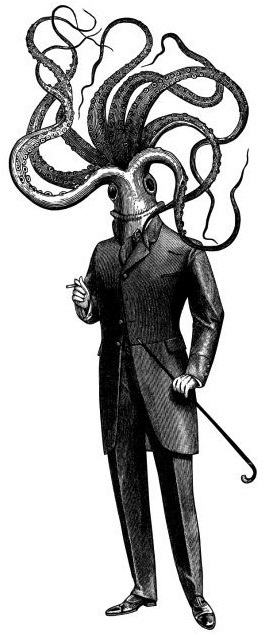

(troublante)
PERSONNALITE
"J'ai aimé jouer des personnages caricaturaux : il est plus simple d'ajouter des couches d'habits à sa personnalité plutôt que de la déshabiller d'emblée. " Jean Pierre MARIELLE
La personnalité est une notion très ancienne, qui trouve notamment son origine dans la théorie des humeurs, chez Hippocrate et des tempéraments décrits par Galien : le sanguin, le bilieux, le lymphatique, l’atrabilaire (humeur sombre qui provient de la bile noire). Au point de vue psychologique, la personnalité est définie comme une façon de réagir, d’être au monde avec soi-même et les autres. Elle est ce qui rend une personne singulière. Le terme "personnalité" dérive d’ailleurs du mot grec persona, qui désignait le masque utilisé par les acteurs du théâtre antique, utilisé pour montrer aux spectateurs que le personnage réagissait de la même façon durant toute la pièce. Avoir "une personnalité" consiste donc en la répétition de comportements, de paroles, d'émotions ou de pensées qui caractérise l'individu. C'est le fameux "c'est bien vous" ou "on vous reconnait bien là".
Voyez ici la personnalité comme un cadre sélectif qui reflète des choix, des valeurs personnelles et une interprétation du monde. Elle rend compte de ce qui qualifie l'individu : permanence et continuité des modes d'action et de réaction, originalité, spécificité et singularité de sa manière d'être. C'est un noyau relativement stable de l'individu. La personnalité est définie comme le résultat, chez un sujet donné, de l’intégration dynamique de composantes cognitives, pulsionnelles et émotionnelles. L’agencement de ces différents facteurs constitue les traits de personnalité, à savoir les modalités relationnelles de la personne et sa façon de se penser dans son environnement. Elle se construit tout au long de la vie d’un individu, particulièrement pendant les premières années de l'existance et continuera de se modeler par la suite au travers des expériences traversées, et des rencontres avec l’autre.
Identifiable assez tôt, la personnalité permet de s’adapter à l’environnement. Elle est stable dans le temps, mais peut évoluer dans certaines dimensions. On parle de personnalité pathologique ou de trouble de la personnalité lorsque la personnalité conduit à une souffrance pour la personne ou son entourage. Si la personnalité est un ingrédient indispensable de notre structure psychique, elle peut souffrir et tomber malade. On parle alors de personnalité pathologique qui s'exprime notamment par un fonctionnement rigide et chronique. L'individu a tendance à répéter les mêmes attitudes et les mêmes conflits, faisant émerger des réponses inadaptées et une altération significative du fonctionnement social. Ces modalités de comportement profondément enracinées et durables consiste en des réactions inflexibles : théâtralisme, méfiance accrue, jalousie, grandiloquence et comportements expansifs, séduction exagérée, mégalomanie, bizarrerie et excentricité, émotivité hypertrophiée, doute permanent, obsession et maniaquerie, etc.
Les troubles de la personnalité trouvent leur origine dans la combinaison de 3 facteurs : les tempéraments innés qui peuvent être génétiquement (déterminés comme l’impulsivité, l’introversion, l’anxiété…), l’histoire de vie (marquée par les stress ou les traumatismes) et l’éducation que l’on a reçue. Ils touchent entre 10% et 15% de la population et sont à l’origine d’une réelle souffrance, de relations difficiles et d’une mauvaise image de soi. D’une façon générale, un trouble de la personnalité se caractérise par une façon stable et inadaptée de percevoir soi-même et les autres, de se comporter, de réagir sur le plan affectif et émotionnel et d’établir des relations avec autrui. Une des conséquence de ces inadaptations est l'instauration réactionnelle d'un carcan socio-affectif qui isole progressivement le sujet. Il peut alors, générer une vulnérabilité vers un état anxio-dépressif, des addictions ou autres troubles psychiques comme des T.OC. ou des troubles du comportement alimentaire.
Le DSM-5, le système de classification de l’Association américaine de psychiatrie, décrit 10 troubles de la personnalité répartis en trois groupes, ou « clusters » A, B, C. :
Le cluster A regroupe des sujets aux comportements étranges ou excentriques. Y figurent trois troubles de la personnalité :
• les personnalités schizotypique : elles sont souvent qualifiées d’étranges par leur entourage, en raison de leur façon de s’exprimer, de se comporter, voire de s’habiller. Ces personnes se distinguent de celles atteintes de schizophrénie, car elles ne présentent pas de délire, d’hallucinations ou de désorganisation de la pensée. Marquées du sceau de la bizarrerie, elles sont souvent rejetées dans le milieu scolaire, puis dans le milieu du travail. Leur intelligence est normale, mais leurs sentiments, leurs raisonnements sont atypiques et inadaptés (elles peuvent être convaincues de pouvoir sentir qu’un événement négatif va se produire, de lire à travers les pensées ou de comprendre la signification des choses au-delà de la réalité). Le but est les intégrer à notre société pour qu’elles y trouvent leur place ;
• les personnalités schizoïdes : introverties, ces personnes dégagent une froideur émotionnelle qui met les autres mal à l’aise. Ce sont des individus solitaires qui fuient le contact, non pas parce qu’ils en ont peur, mais par ce que cela ne les intéresse pas. Détachés du monde et des relations sociales, ils cherchent à vivre à l’écart. Ils ne sollicitent pas d’aide, mais le maintien du lien social peut éviter un isolement et un repli sur soi, s’accompagnant de complications psychiatriques.
• Les personnalités paranoïaques : ils sont interprétatifs, méfiants, convaincus que les autres veulent leur nuire et qu’ils doivent, en conséquence, être en permanence sur leurs gardes et en mode défensif. Ils souffrent, mais font aussi souffrir leur entourage par leur attitude soupçonneuse. C’est par exemple le cas des jaloux pathologiques. Il est souvent difficile de les aider à changer, mais certains peuvent assouplir leurs croyances que le monde est contre eux et faire plus confiance.
Voyez ici la personnalité comme un cadre sélectif qui reflète des choix, des valeurs personnelles et une interprétation du monde. Elle rend compte de ce qui qualifie l'individu : permanence et continuité des modes d'action et de réaction, originalité, spécificité et singularité de sa manière d'être. C'est un noyau relativement stable de l'individu. La personnalité est définie comme le résultat, chez un sujet donné, de l’intégration dynamique de composantes cognitives, pulsionnelles et émotionnelles. L’agencement de ces différents facteurs constitue les traits de personnalité, à savoir les modalités relationnelles de la personne et sa façon de se penser dans son environnement. Elle se construit tout au long de la vie d’un individu, particulièrement pendant les premières années de l'existance et continuera de se modeler par la suite au travers des expériences traversées, et des rencontres avec l’autre.
Identifiable assez tôt, la personnalité permet de s’adapter à l’environnement. Elle est stable dans le temps, mais peut évoluer dans certaines dimensions. On parle de personnalité pathologique ou de trouble de la personnalité lorsque la personnalité conduit à une souffrance pour la personne ou son entourage. Si la personnalité est un ingrédient indispensable de notre structure psychique, elle peut souffrir et tomber malade. On parle alors de personnalité pathologique qui s'exprime notamment par un fonctionnement rigide et chronique. L'individu a tendance à répéter les mêmes attitudes et les mêmes conflits, faisant émerger des réponses inadaptées et une altération significative du fonctionnement social. Ces modalités de comportement profondément enracinées et durables consiste en des réactions inflexibles : théâtralisme, méfiance accrue, jalousie, grandiloquence et comportements expansifs, séduction exagérée, mégalomanie, bizarrerie et excentricité, émotivité hypertrophiée, doute permanent, obsession et maniaquerie, etc.
Les troubles de la personnalité trouvent leur origine dans la combinaison de 3 facteurs : les tempéraments innés qui peuvent être génétiquement (déterminés comme l’impulsivité, l’introversion, l’anxiété…), l’histoire de vie (marquée par les stress ou les traumatismes) et l’éducation que l’on a reçue. Ils touchent entre 10% et 15% de la population et sont à l’origine d’une réelle souffrance, de relations difficiles et d’une mauvaise image de soi. D’une façon générale, un trouble de la personnalité se caractérise par une façon stable et inadaptée de percevoir soi-même et les autres, de se comporter, de réagir sur le plan affectif et émotionnel et d’établir des relations avec autrui. Une des conséquence de ces inadaptations est l'instauration réactionnelle d'un carcan socio-affectif qui isole progressivement le sujet. Il peut alors, générer une vulnérabilité vers un état anxio-dépressif, des addictions ou autres troubles psychiques comme des T.OC. ou des troubles du comportement alimentaire.
Le DSM-5, le système de classification de l’Association américaine de psychiatrie, décrit 10 troubles de la personnalité répartis en trois groupes, ou « clusters » A, B, C. :
Le cluster A regroupe des sujets aux comportements étranges ou excentriques. Y figurent trois troubles de la personnalité :
• les personnalités schizotypique : elles sont souvent qualifiées d’étranges par leur entourage, en raison de leur façon de s’exprimer, de se comporter, voire de s’habiller. Ces personnes se distinguent de celles atteintes de schizophrénie, car elles ne présentent pas de délire, d’hallucinations ou de désorganisation de la pensée. Marquées du sceau de la bizarrerie, elles sont souvent rejetées dans le milieu scolaire, puis dans le milieu du travail. Leur intelligence est normale, mais leurs sentiments, leurs raisonnements sont atypiques et inadaptés (elles peuvent être convaincues de pouvoir sentir qu’un événement négatif va se produire, de lire à travers les pensées ou de comprendre la signification des choses au-delà de la réalité). Le but est les intégrer à notre société pour qu’elles y trouvent leur place ;
• les personnalités schizoïdes : introverties, ces personnes dégagent une froideur émotionnelle qui met les autres mal à l’aise. Ce sont des individus solitaires qui fuient le contact, non pas parce qu’ils en ont peur, mais par ce que cela ne les intéresse pas. Détachés du monde et des relations sociales, ils cherchent à vivre à l’écart. Ils ne sollicitent pas d’aide, mais le maintien du lien social peut éviter un isolement et un repli sur soi, s’accompagnant de complications psychiatriques.
• Les personnalités paranoïaques : ils sont interprétatifs, méfiants, convaincus que les autres veulent leur nuire et qu’ils doivent, en conséquence, être en permanence sur leurs gardes et en mode défensif. Ils souffrent, mais font aussi souffrir leur entourage par leur attitude soupçonneuse. C’est par exemple le cas des jaloux pathologiques. Il est souvent difficile de les aider à changer, mais certains peuvent assouplir leurs croyances que le monde est contre eux et faire plus confiance.

Le cluster B du DSM-5 comprend des sujets qui se caractérisent par leur comportement dramatique, émotionnel ou erratique. Il regroupe 4 troubles de la personnalité :
• les personnalité borderline : elles ne maîtrisent pas leurs émotions et réagissent de façon brutale et impulsive à des frustrations ou parfois à des contrariétés minimes. Cela peut les mettre en danger, car ces personnes ressentent parfois un besoin soudain de se soulager en se faisant du mal (prise d’alcool, scarifications). Elles ne trouvent pas leur équilibre psychique tant elles sont emportées par des hauts et des bas, des moments de vide et de solitude, une mauvaise image d’elles-mêmes et des relations conflictuelles.
• les personnalités antisociales : ces personnes ne respectent pas les règles de vie en société. Elles cherchent à assouvir leurs besoins sans se soucier de ceux des autres. Souvent impulsives, elles peuvent être enclines à des actes de violence (qu’elles ont parfois elles-mêmes vécus) et peuvent rencontrer des problèmes avec la justice. Elles n’éprouvent pas de culpabilité. Certaines ont des comportements adaptés en société : on parle alors de personnalité psychopathique. Si les antisociaux sont visibles et erratiques, les psychopathes sont organisés, manipulateurs et sournois, jusqu’au jour où l’on découvre ce qu’ils font subir aux autres. Face à de telles personnalités, l’objectif de la psychothérapie est de développer la reconnaissance et l’empathie vis-à-vis de la souffrance des autres.
• Les personnalités histrioniques : mus par le besoin de se mettre en avant, ces individus prennent beaucoup de place en société. Ils sont en quête permanente d’attention et cherchent à séduire. Au-delà des apparences, la souffrance est bien réelle et cette attitude masque une hypersensibilité et des failles dans les liens d’attachement. La psychothérapie aide à la gestion des émotions face aux frustrations, à l’autonomie affective et au détachement du regard des autres.
• Les personnalités narcissiques : les personnes atteintes par ce trouble de la personnalité ressentent un sentiment de supériorité par rapport aux autres, accompagné d’un besoin d’être admiré et d’un manque d’empathie. Elles ont tendance à surévaluer leurs qualités et leur valeur et à minimiser celles des autres. Pour certaines d’entre elles, cette arrogance peut dissimuler un manque affectif dans l’enfance et une quête permanente d’approbation. La psychothérapie met en avant le manque d’estime de soi et cherche à la restaurer pour stimuler ensuite l’intérêt pour les autres.
Le cluster C concerne quant à lui les sujets anxieux ou craintifs. Il regroupe trois troubles de la personnalité :
• Les personnalités dépendantes : ces personnes doutent beaucoup d’eux-mêmes. Craignant d’être abandonnées, elles sont en quête permanente de réassurance. Elles ne sont pas autonomes, et peuvent être collantes. Confrontées à des situations difficiles, telles que des changements importants ou des séparations, elles ressentent une grande souffrance. La psychothérapie doit leur apprendre à mieux supporter l’anxiété et les rendre plus autonomes, afin qu’elles cessent de chercher quelqu’un qui les rassure en permanence.
• Les personnalités évitantes : elles évitent les situations sociales, car elles en ont peur, alors même qu’elles aimeraient être moins timides, moins inhibées. Elles manquent de confiance en elles et sont sensibles au jugement des autres. La psychothérapie doit les aider à avoir une meilleure estime d’elles-mêmes, à maîtriser leur anxiété de performance, à s’affirmer et à oser prendre leur place en se préoccupant moins du regard des autres.
• Les personnalités obsessionnelles-compulsives : on qualifie ces personnes de « maniaques », car leurs exigences d’ordre et d’organisation les conduisent à dépenser beaucoup de temps et d’énergie pour réaliser les tâches du quotidien. Cela peut les amener à se perdre dans les détails, à être lents et souvent en retard. Elles sont perfectionnistes et ont des exigences et des standards très élevés. La thérapie leur apprend à accepter l’imperfection, lâcher prise et moins être dans le contrôle.
Il faut souligner que souvent, les personnes ne présentent pas toutes les caractéristiques d’un trouble de la personnalité, mais possèdent des traits appartenant à un ou plusieurs troubles. Par exemple, le perfectionniste qui est un trait de la personnalité obsessionnelle compulsive peut être associé à un manque de confiance en soi, la timidité à une recherche de réassurance de la personnalité dépendante, l’impulsivité fréquente chez les personnalités antisociale ou psychopathique à des traits histrionique ou narcissique.
L'hypnose va favoriser dans ces cas de figures l'émergence de possibilités d'adaptation en ouvrant le champ de compréhension sur les environements et les interrelatons. Ainsi, en levant ses filtres réducteurs, le sujet s'autorise à retrouver une flexibilité dans son rapport au monde en annihilant, entre autre, ses croyances limitantes et/ou ses traumas, raisons partielles de la rigidité caractéristique du trouble.
• les personnalité borderline : elles ne maîtrisent pas leurs émotions et réagissent de façon brutale et impulsive à des frustrations ou parfois à des contrariétés minimes. Cela peut les mettre en danger, car ces personnes ressentent parfois un besoin soudain de se soulager en se faisant du mal (prise d’alcool, scarifications). Elles ne trouvent pas leur équilibre psychique tant elles sont emportées par des hauts et des bas, des moments de vide et de solitude, une mauvaise image d’elles-mêmes et des relations conflictuelles.
• les personnalités antisociales : ces personnes ne respectent pas les règles de vie en société. Elles cherchent à assouvir leurs besoins sans se soucier de ceux des autres. Souvent impulsives, elles peuvent être enclines à des actes de violence (qu’elles ont parfois elles-mêmes vécus) et peuvent rencontrer des problèmes avec la justice. Elles n’éprouvent pas de culpabilité. Certaines ont des comportements adaptés en société : on parle alors de personnalité psychopathique. Si les antisociaux sont visibles et erratiques, les psychopathes sont organisés, manipulateurs et sournois, jusqu’au jour où l’on découvre ce qu’ils font subir aux autres. Face à de telles personnalités, l’objectif de la psychothérapie est de développer la reconnaissance et l’empathie vis-à-vis de la souffrance des autres.
• Les personnalités histrioniques : mus par le besoin de se mettre en avant, ces individus prennent beaucoup de place en société. Ils sont en quête permanente d’attention et cherchent à séduire. Au-delà des apparences, la souffrance est bien réelle et cette attitude masque une hypersensibilité et des failles dans les liens d’attachement. La psychothérapie aide à la gestion des émotions face aux frustrations, à l’autonomie affective et au détachement du regard des autres.
• Les personnalités narcissiques : les personnes atteintes par ce trouble de la personnalité ressentent un sentiment de supériorité par rapport aux autres, accompagné d’un besoin d’être admiré et d’un manque d’empathie. Elles ont tendance à surévaluer leurs qualités et leur valeur et à minimiser celles des autres. Pour certaines d’entre elles, cette arrogance peut dissimuler un manque affectif dans l’enfance et une quête permanente d’approbation. La psychothérapie met en avant le manque d’estime de soi et cherche à la restaurer pour stimuler ensuite l’intérêt pour les autres.
Le cluster C concerne quant à lui les sujets anxieux ou craintifs. Il regroupe trois troubles de la personnalité :
• Les personnalités dépendantes : ces personnes doutent beaucoup d’eux-mêmes. Craignant d’être abandonnées, elles sont en quête permanente de réassurance. Elles ne sont pas autonomes, et peuvent être collantes. Confrontées à des situations difficiles, telles que des changements importants ou des séparations, elles ressentent une grande souffrance. La psychothérapie doit leur apprendre à mieux supporter l’anxiété et les rendre plus autonomes, afin qu’elles cessent de chercher quelqu’un qui les rassure en permanence.
• Les personnalités évitantes : elles évitent les situations sociales, car elles en ont peur, alors même qu’elles aimeraient être moins timides, moins inhibées. Elles manquent de confiance en elles et sont sensibles au jugement des autres. La psychothérapie doit les aider à avoir une meilleure estime d’elles-mêmes, à maîtriser leur anxiété de performance, à s’affirmer et à oser prendre leur place en se préoccupant moins du regard des autres.
• Les personnalités obsessionnelles-compulsives : on qualifie ces personnes de « maniaques », car leurs exigences d’ordre et d’organisation les conduisent à dépenser beaucoup de temps et d’énergie pour réaliser les tâches du quotidien. Cela peut les amener à se perdre dans les détails, à être lents et souvent en retard. Elles sont perfectionnistes et ont des exigences et des standards très élevés. La thérapie leur apprend à accepter l’imperfection, lâcher prise et moins être dans le contrôle.
Il faut souligner que souvent, les personnes ne présentent pas toutes les caractéristiques d’un trouble de la personnalité, mais possèdent des traits appartenant à un ou plusieurs troubles. Par exemple, le perfectionniste qui est un trait de la personnalité obsessionnelle compulsive peut être associé à un manque de confiance en soi, la timidité à une recherche de réassurance de la personnalité dépendante, l’impulsivité fréquente chez les personnalités antisociale ou psychopathique à des traits histrionique ou narcissique.
L'hypnose va favoriser dans ces cas de figures l'émergence de possibilités d'adaptation en ouvrant le champ de compréhension sur les environements et les interrelatons. Ainsi, en levant ses filtres réducteurs, le sujet s'autorise à retrouver une flexibilité dans son rapport au monde en annihilant, entre autre, ses croyances limitantes et/ou ses traumas, raisons partielles de la rigidité caractéristique du trouble.
EN RELATION

AUTHENTICITE
COMPORTEMENT
AFFIRMATION
REPETITION
ANXIETE
A-BANDON